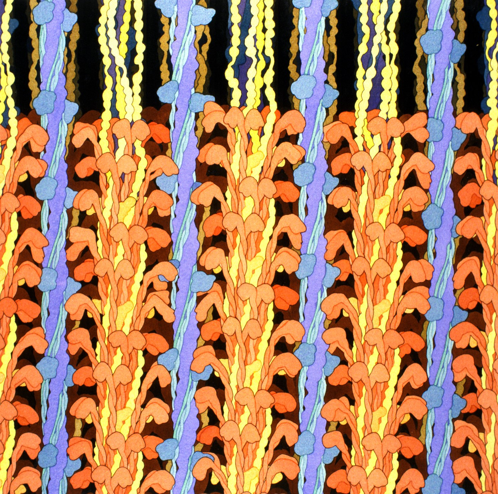

2.6 Life Without Oxygen
Chapter 2.5 ended with oxygen sitting at the end of the electron transport chain, accepting spent electrons. Take it away and the whole chain backs up within seconds. This chapter is about the escape route cells use when that happens — what it produces, what it costs, and why bread, beer, cheese and cramp are all the same piece of biochemistry.
What actually goes wrong when the oxygen runs out
The obvious answer is "the cell can't make ATP from the electron transport chain any more". True, and it misses the more urgent problem.
Think about what the earlier stages need. Glycolysis takes NAD⁺, loads it with electrons and hydrogen, and hands back NADH. So does pyruvate oxidation, and so does the citric acid cycle. A cell holds only a small stock of these carriers, and it works because the electron transport chain keeps unloading them and handing NAD⁺ back.
Stop the chain and that recycling stops. Within seconds every NAD⁺ in the cell is now NADH, loaded and with nowhere to unload. And a cell with no free NAD⁺ cannot run glycolysis either — glycolysis needs NAD⁺ as an input.
So without oxygen the cell loses not 88% of its ATP but all of it. Even glycolysis, which needs no oxygen of its own, grinds to a halt for want of empty carriers.
That is the problem fermentation solves. Fermentation makes no ATP whatsoever. Its entire job is to dump the electrons off NADH onto something else, regenerating NAD⁺ so that glycolysis can keep running.
Every ATP a fermenting cell gets comes from glycolysis. Fermentation is not an alternative way of making ATP; it is the maintenance crew that lets the one oxygen-free ATP-making stage keep going.
Once you see fermentation that way, its products stop looking arbitrary. Ethanol and lactic acid are not useful to the cell. They are where the electrons were dumped.
Two ways to dump the electrons
Both start from the pyruvate that glycolysis produced, and both hand NADH's load to it.
Lactic acid fermentation
C₆H₁₂O₆ → 2 C₃H₆O₃ (2 lactate) + 2 ATP
Pyruvate is reduced directly to lactate. Nothing is released as gas, and no carbon leaves — count them: 6 carbons in the glucose, 6 in the two lactate molecules. This is what your muscle cells do when they are working harder than your blood can supply oxygen for, and what Lactobacillus does to milk to make yoghurt and cheese.
Alcoholic fermentation
C₆H₁₂O₆ → 2 C₂H₅OH + 2 CO₂ + 2 ATP
Pyruvate first loses a carbon as CO₂ and then takes the electrons, becoming ethanol. Check the atoms: 6 C = 4 + 2 ✓, 12 H = 12 ✓, 6 O = 2 + 4 ✓. This is what yeast does, and it is the reaction behind every loaf of bread and every alcoholic drink humans have ever made — the gas raises the dough, the ethanol is the drink.
One more piece of vocabulary from the anchor guide. A facultative anaerobe uses oxygen when it is there and ferments when it is not — yeast, E. coli, and your own muscle cells all qualify. An obligate anaerobe cannot use oxygen at all and is usually poisoned by it; the bacteria that cause tetanus and botulism are examples, which is why deep puncture wounds and badly sealed tins are dangerous.
What it costs
Put the two side by side and do the arithmetic.
| Aerobic respiration | Fermentation | |
|---|---|---|
| Needs oxygen? | Yes | No |
| Where | Cytosol, then mitochondrion | Cytosol only |
| Glucose fully broken down? | Yes, to CO₂ and H₂O | No — stops at lactate or ethanol |
| ATP per glucose | 32 | 2 |
| Waste | CO₂ and water | Lactate, or ethanol and CO₂ |
Aerobic respiration gets 16 times as much ATP from the same molecule. Fermentation captures about 6% of what aerobic respiration manages.
The reason is visible in the equations. Aerobic respiration takes glucose all the way down to CO₂ and water — the bottom of the energy hill from 2.1. Fermentation stops at lactate or ethanol, which are still substantial organic molecules with plenty of chemical potential energy left in them. A fermenting cell is throwing away most of its fuel unburnt.
You can prove that leftover energy is real by burning it. Ethanol is the fuel in a spirit burner, and in some countries it is the fuel in a car. A yeast cell finished with a sugar molecule and discarded something a Formula One engine will happily run on.
Lactate is the same story with a less dramatic ending. Your liver takes the lactate your muscles made, spends ATP to convert it back into glucose, and sends it round again — which is part of why you keep breathing hard after you stop running.
The yeast experiment
Four sealed tubes of yeast, each with a different sucrose concentration, in a warm bath for ten minutes. Yeast are facultative anaerobes: they will use the small amount of dissolved oxygen in the tube first, and once that is gone they ferment. Fermentation makes carbon dioxide, the gas collects at the top of the tube and pushes the liquid down, and the height of that air space is your measurement.
Predict all four bars before you look at the class data.
Yeast fermentation lab
InteractivePage 18 of Anchor Guide 2 sets the experiment at 5 mL of sucrose solution per tube. The teaching deck corrects this to 1 mL — slide 129 is the same table as slide 117 with the volume changed and the note "Change on anchor guide" beside it. The class data you are working with was collected with 1 mL. If your printed guide still says 5 mL, cross it out.
One question in the guide deserves its answer written down, because it is a genuinely good piece of reasoning. What evidence do we have that yeast can convert sucrose into glucose?
Glycolysis takes glucose. It cannot take sucrose — sucrose is a disaccharide, glucose joined to fructose, and it is too big to enter the pathway. Yet the sucrose tubes bubbled, and the tube with the most sucrose bubbled most. Since the only sugar available in those tubes was sucrose, and fermentation happened anyway, the yeast must have split the sucrose first. (It does: an enzyme called invertase hydrolyses sucrose into glucose and fructose, and the reaction balances — C₁₂H₂₂O₁₁ + H₂O → 2 C₆H₁₂O₆.)
Does oxygen actually matter? Two sets of evidence
The claim "aerobic respiration yields far more ATP than fermentation" has been asserted twice in this chapter. Here is evidence for it, from an experiment done on a facultative anaerobe.
Aerobacter aerogenes was grown in tubes of water containing salts and various concentrations of glucose. Some tubes were sealed so no air could reach the cells. Others had air bubbled through continuously. Cells were counted at maximum growth.
| Glucose (mg per 100 mL) | Without air millions of cells/mL | With air millions of cells/mL | Ratio |
|---|---|---|---|
| 18 | 50 | 200 | 4.0× |
| 36 | 90 | 500 | 5.6× |
| 54 | 170 | 800 | 4.7× |
| 72 | 220 | 1100 | 5.0× |
| 162 | 450 | 2100 | 4.7× |
| 288 | 650 | Not measured. Without air, growth flattens off here at roughly 675 million cells/mL however much more glucose is supplied. | |
| 360 | 675 | ||
| 432 | 675 | ||
| 540 | 670 | ||
Two patterns, and both are worth stating carefully.
Air multiplies the yield by about five. At every glucose concentration measured, the aerated tubes reached four to six times as many cells — mean 4.8×. Building a bacterium costs ATP, so cells per unit of glucose is a reasonable proxy for ATP per unit of glucose. Roughly a fivefold advantage is in the right region for a sixteen-fold ATP advantage, once you allow for the fact that not all the glucose goes to growth.
Without air the culture hits a ceiling. Beyond about 288 mg of glucose the sealed tubes stop responding — 650, 675, 675, 670. Adding more sugar buys nothing. Something else has become limiting, and the most likely candidate is the ethanol and acid the cells have been dumping into their own tube.
Write a CER for this data set, the way the guide asks. Claim: one sentence, no yes or no, naming the relationship. Evidence: specific numbers from the table, enough of them to show a trend. Reasoning: the ATP arithmetic from 2.5 and this chapter, connecting the number of cells to the amount of ATP available per glucose molecule.
Note carefully that the source spells the organism "Aerobacter aerogens". The accepted spelling is Aerobacter aerogenes, and the species has since been reclassified as Klebsiella aerogenes.
The same question, in an aquarium
The second piece of evidence lets you set the conditions yourself. A tank of water, some fish, some plants, a lamp and a thermostat. Fish respire and consume oxygen. Plants photosynthesise and produce it — and respire and consume it, all the time, which is the part most models leave out.
Part A sweeps the temperature with fish only, which is the experiment the original worksheet runs. Part B is the harder and better one: find a combination that holds the dissolved oxygen steady for a full hour.
The aquarium: find the balance point
Interactive- In Part A, why does oxygen consumption rise between 15 °C and 35 °C — and why does it stop rising after that? Both halves of the answer are about enzymes.
- Find three balanced combinations in Part B. What do they have in common? What single change breaks every one of them?
- Set a balanced tank, then set the light to 0%. Explain what happens and how fast.
- Balanced means the dissolved oxygen is not changing. Does it mean nothing is happening? Answer in terms of the two rates.
Muscles, and a model that goes one step too far
The last modelling task in Anchor Guide 2 asks you to draw two muscle cells: one during light exercise, one during heavy exercise, assuming the cells are receiving less oxygen than is normal.

During light exercise your heart and lungs keep up. Oxygen arrives fast enough, the electron transport chain runs, and your muscle cells respire aerobically at roughly 32 ATP per glucose. Waste out: CO₂ and water.
During heavy exercise your muscles demand ATP faster than your circulation can deliver oxygen. So:
- Aerobic respiration keeps running, at the fastest rate the available oxygen allows. It is running at its ceiling, not switched off.
- The shortfall is covered by lactic acid fermentation, on top. Glycolysis speeds up, NAD⁺ is regenerated by converting pyruvate to lactate, and each glucose yields only 2 ATP through that route.
- Lactate accumulates, and afterwards you keep breathing hard while your body clears it and repays the oxygen it went without.
You may see a worked example — including one in the teacher's own answer set — that crosses out the whole mitochondrion and writes "aerobic respiration shuts down". Do not copy that.
Aerobic respiration does not stop during heavy exercise. If it did you would lose about 94% of your ATP supply instantly and collapse, and elite athletes would be no better than anyone else at events lasting more than a minute — the thing that makes them better is precisely their capacity to keep aerobic respiration going at a very high rate.
The anchor guide's own wording is the careful one: the cells are receiving less oxygen than is normal. Less, not none. Your model should show the aerobic pathway still running, at its limit, with fermentation supplementing it.
The same logic sorts out a related puzzle. Why is a 100-metre sprint anaerobic and a marathon aerobic? Not because the runner's biochemistry changes, but because of rates. A sprinter's demand is enormous and brief; oxygen delivery cannot ramp up in ten seconds, so most of the ATP comes from stored phosphates and glycolysis. A marathon runner's demand is high but sustained at a level oxygen delivery can just about match — which is exactly why they must run at a pace they can supply, and why hitting that limit is called "hitting the wall".
Where this goes next
You now have the two processes that move energy and carbon through every living thing: photosynthesis putting energy into sugar, and respiration taking it out again. Everything so far has been at the scale of one cell.
The rest of the unit changes nothing about the chemistry and everything about the scale. Chapter 2.7 asks what happens when you stack organism on organism — when the energy in a plant has to pass through a grasshopper, then a mouse, then a hawk, losing some at every step. The answer explains why there are so few wolves, and it is the second law of thermodynamics from 2.1 with fur on it.
Quick check
Auto-marked. Get one wrong and it will point you back to the section that covers it.
What is fermentation actually for?
Once you see fermentation as a maintenance crew rather than an engine, its products stop looking arbitrary. Ethanol and lactic acid are not useful to the cell — they are simply where the electrons were dumped.
Yeast finish with a sugar molecule and leave ethanol behind; your muscles leave lactate. Why does a cell make these at all?
The point of the pathway is the empty carrier it hands back, not the molecule it leaves behind. Whatever pyruvate turns into is a by-product of the cell needing somewhere to put electrons.
Glycolysis needs no oxygen. So why does a cell with no oxygen and no fermentation stop making ATP altogether?
This is the part most people miss. Without oxygen a cell loses not 88% of its ATP but all of it — even the one stage that never needed oxygen in the first place. That is the problem fermentation exists to solve.
Suppose a cell held a hundred times its normal stock of NAD⁺, and still had no oxygen and no fermentation. What would change?
NAD⁺ and NADH are the same small population of molecules going round and round. A bigger pool buys more time; only something that unloads them buys a cell an indefinite supply.
Yeast in dough produces bubbles. Your muscles making lactate do not. Why the difference?
Both equations balance, and counting the atoms tells you what to expect before you ever see a tube. C₆H₁₂O₆ → 2 C₃H₆O₃ has nowhere for a gas to come from. C₆H₁₂O₆ → 2 C₂H₅OH + 2 CO₂ does — and that gas is the entire point in baking.
A brewer and a yoghurt maker both seal their vessel. Only one needs a valve to let gas escape. Which, and why?
The equation tells you what to expect from a sealed vessel before you ever open one. C₆H₁₂O₆ → 2 C₂H₅OH + 2 CO₂ has a gas in it; C₆H₁₂O₆ → 2 C₃H₆O₃ does not.
Fermentation is quick and needs no oxygen. Does that make it a more efficient way to use a glucose molecule?
A fermenting cell is throwing away most of its fuel unburnt, and you can prove the leftover energy is real by setting fire to it — ethanol runs spirit burners and, in some countries, cars. Fermentation is a fallback, not a shortcut.
Lactate leaves your muscle, and your liver spends ATP turning it back into glucose. What does that tell you about lactate?
The waste product is the evidence. Ethanol will run a spirit burner and lactate is worth rebuilding into sugar — neither is what a molecule looks like after all its energy has been taken out.
Glycolysis can only take glucose, never sucrose. Yet tubes containing only sucrose bubbled hard, and the most concentrated bubbled most. What does that show?
This is a nice piece of reasoning: you never see the splitting happen, but you can show it must have. Yeast makes an enzyme called invertase, and the reaction balances — C₁₂H₂₂O₁₁ + H₂O → 2 C₆H₁₂O₆.
The sucrose tubes bubbled, and the tube with the most sucrose bubbled most. Why does that second observation strengthen the argument?
A single positive result tells you something happened; a dose-response tells you what caused it. The rising trend is what rules out the gas having come from anything other than the sugar you added.
In the sealed Aerobacter tubes, adding glucose beyond 288 mg stopped increasing the cell count — 650, 675, 675, 670. What is the best explanation?
Two patterns live in that table and both are worth stating carefully. Air multiplies the yield by about five at every concentration measured, which is in the right region for a sixteen-fold ATP advantage. And a flat line at the top of a curve is always telling you that something you were not varying has run out.
The aerated Aerobacter tubes grew about five times as many cells, yet aerobic respiration yields sixteen times the ATP. Does that mismatch sink the claim?
Knowing what a measurement is a proxy for tells you how closely to expect it to match. Cell counts fold in everything else the glucose was spent on, so agreement in direction and rough size is all this data set can offer — and it delivers that at every concentration measured.
During a hard sprint, what happens to aerobic respiration in your leg muscles?
The anchor guide's own wording is the careful one: the cells receive less oxygen than is normal. Less, not none. What makes an elite athlete better over anything longer than a minute is precisely their capacity to keep aerobic respiration running at a very high rate.
A marathon is called aerobic and a 100-metre sprint anaerobic, though both runners have the same biochemistry. What is the actual difference?
This is why hitting the wall is described as a pace problem rather than a chemistry problem. A marathon runner is holding the fastest speed their oxygen supply can sustain; go above it and the shortfall has to be covered the expensive way.